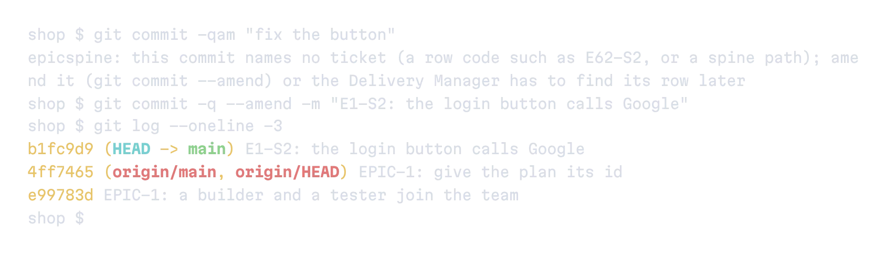
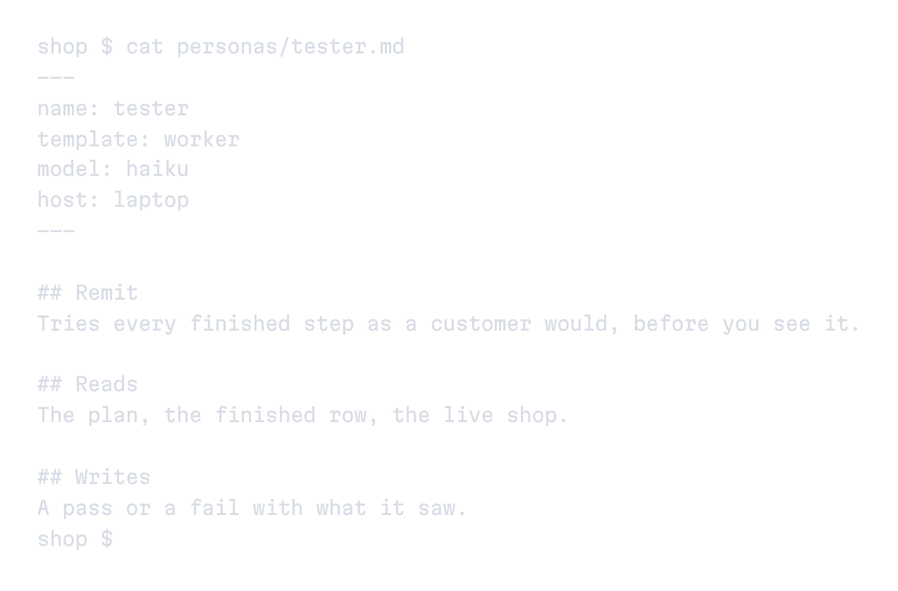
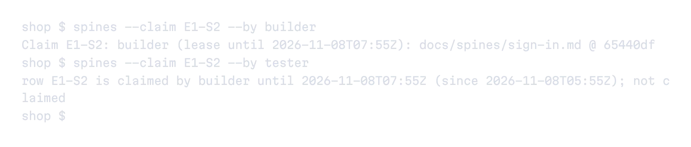
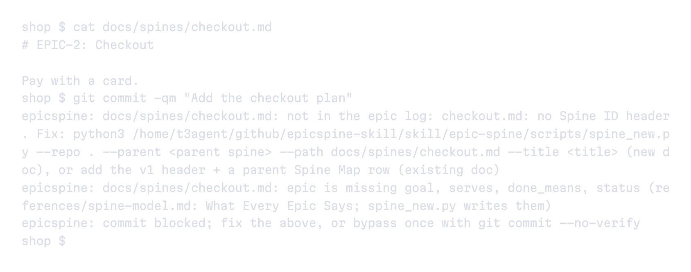

EpicTeam
An AI team that works on your goals. Everything that needs you lands in one inbox.
See EpicTeamEvery agent starts where the last one stopped.
Goals, progress and rules are plain files next to your code. A chat can end. The next one reads them before its first answer, on any machine.

Hooks in every repo flag a commit that names no step and block a plan that breaks the rules. Each finished turn is pushed, so every machine sees it.

Before it acts, an agent binds its role. A persona file says what it is for, what it reads and writes, and which model and machine run it.

Each step names who works it. An agent claims it with one pushed commit, and a second agent is refused with the holder’s name, even from another machine.

EpicSpine ships its doctrine: what every plan must say, how to use git, how to ask you a question. The commit gate checks it, so a plan with no goal or finish line never lands.

Correct an agent once and it writes the rule into the plan. Every later agent reads it before it starts.

Every plan hangs from the one it serves, so goals, steps and their status read as one tree.
Before: agents stop to ask about everything.

An AI team that works on your goals. Everything that needs you lands in one inbox.
See EpicTeamAI agents that find ideas, write your posts and answer replies. You approve every post.
See EpicSocialagents_block.py install.How it works inside, from the file to the roles: read the Book.
$ git clone https://github.com/AlfaBlok/epicspine-skill $ cd epicspine-skill $ mkdir -p ~/.agents/skills $ cp -R skill/epic-spine ~/.agents/skills/ $ cd ~/.agents/skills/epic-spine $ python3 scripts/agents_block.py install-global